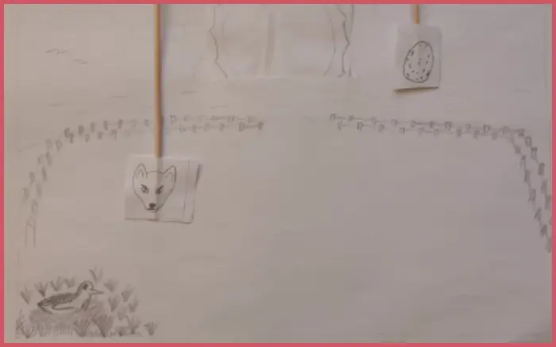
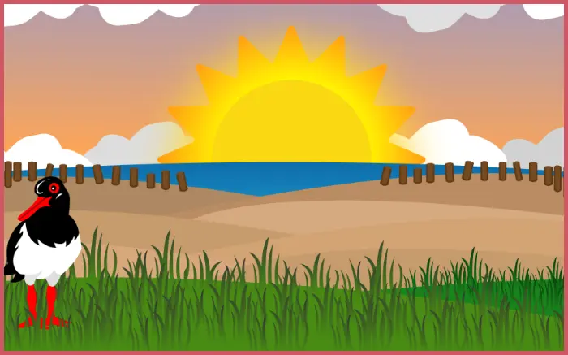

Animations spil
TEMA 4
I dette tema fik vi til opgave at programmerer et interaktivt animeret spil med JavaScript i sammenhæng med CSS animationer. Jeg har udviklet mit eget spildesign, herunder design af UI og spil-elementer med fokus på storytellingsprincipper.
Alt grafisk har jeg skitseret og herefter designet og rentegnet i vector i Adobe Illustrator. Jeg har udarbejdet diagrammer: herunder Aktivitetsdiagram og State Machine Diagram
Derudover skulle vi opbygge et website med et vores klik-spil på, samt med vores dokumentation. Animationsspillet er opbygget ud fra min egen idé, men med opstillede krav af game mechanics, spil-struktur og krav til figurdesign og design af baggrunde.
BESØG SIDEN
Klik herPROCESSDOKUMENTATION
Inspiration
Sketches
Ren tegning
